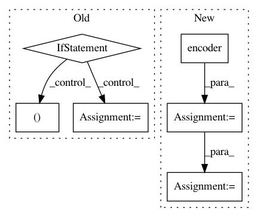

a178a47269013e94c4756f94a2c9a0c373e04a18,examples/next-frame.py,VideoFrameSampler,_sample,#VideoFrameSampler#,589
Before Change
if self.i % (8*24) == 0:
print("RESET")
self.seed()
if self.gan.config.random:
samples += [("rand", self.rg)]
self.rz = self.EZ(self.rg, context={"z":self.rz})
self.rc = self.EC(self.rz, context={"c":self.rc})
self.rg = self.G(self.rc, context={"z":self.rz})
self.i += 1
samples += [("generator", self.g)]
return samples
After Change
self.next_input()
samples = []
inframes = self.current_frames[-args.per_sample_frames+1:]
enc = self.gan.encoder(torch.cat(inframes, dim=1))
self.state = self.gan.state(enc, context={"past": self.state})
g = self.gan.decoder(self.state)
self.current_frames += [g]
self.current_frames = self.current_frames[1:]
self.g = g
print(self.g.mean())
if self.i % (8*24) == 0:
print("RESET")
In pattern: SUPERPATTERN
Frequency: 3
Non-data size: 6
Instances
Project Name: HyperGAN/HyperGAN
Commit Name: a178a47269013e94c4756f94a2c9a0c373e04a18
Time: 2021-01-02
Author: mikkel@255bits.com
File Name: examples/next-frame.py
Class Name: VideoFrameSampler
Method Name: _sample
Project Name: NVIDIA/sentiment-discovery
Commit Name: 8030eeca74b6634f2a60168516573912aaa9cd65
Time: 2018-11-20
Author: raulp@nvidia.com
File Name: model/modeling.py
Class Name: BertForSequenceClassification
Method Name: forward
Project Name: NVIDIA/sentiment-discovery
Commit Name: 65c9a4857e41dcde4f5dae8a77e6cdf03953646a
Time: 2018-03-19
Author: raulp@dbcluster.nvidia.com
File Name: model/model.py
Class Name: RNNFeaturizer
Method Name: forward